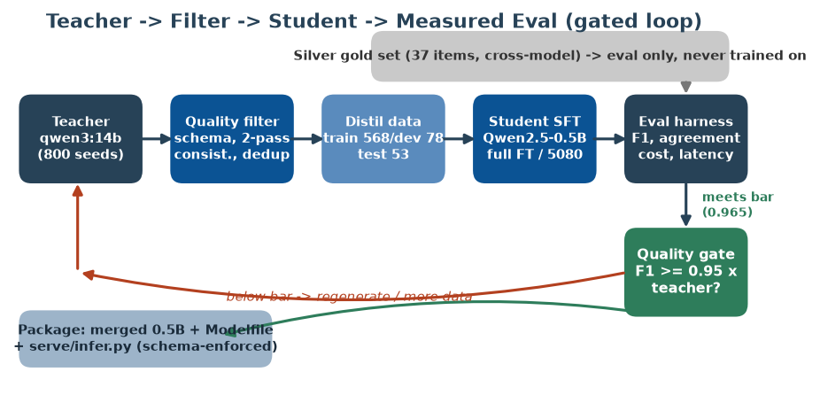
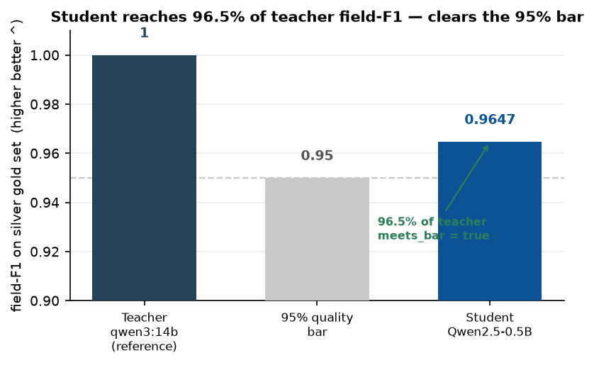
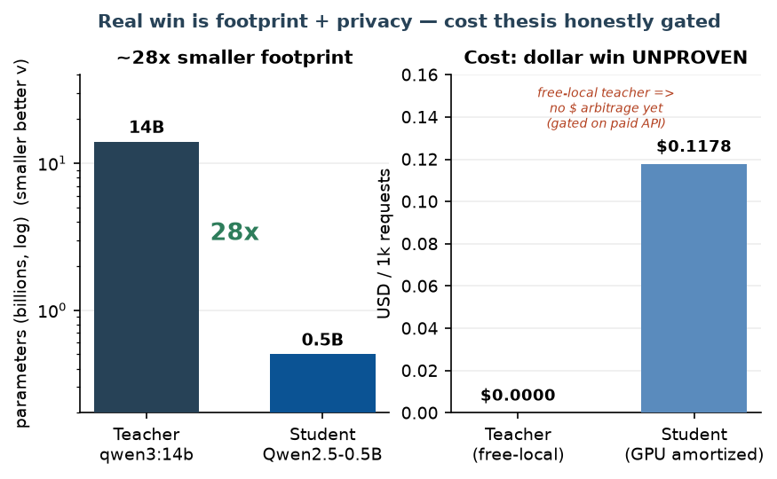
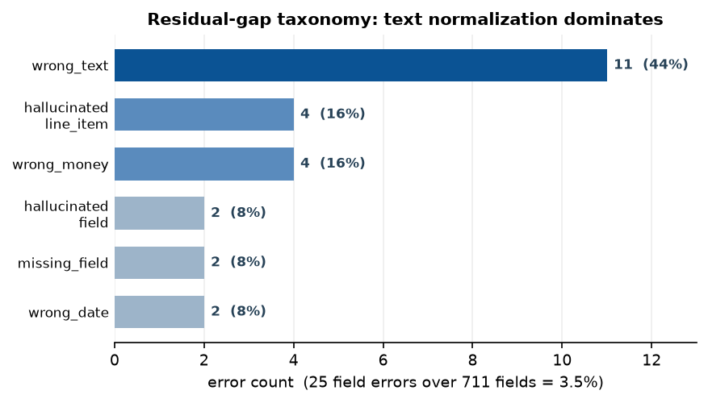

Enterprises increasingly want a specific large-language-model (LLM) capability in production but cannot afford frontier API calls at scale, cannot send documents to third parties for privacy reasons, or need low, predictable latency. Per-request frontier cost quietly kills the unit economics of high-volume, narrow tasks. The standard remedy is task distillation: use an expensive general teacher to generate labeled data for one task, fine-tune a small student to imitate it, and deploy the student locally.
The method itself is not new. Soft-label distillation [1], sequence-level distillation [2], distilled evaluators such as Prometheus [3][4] and JudgeLM [5], synthetic-data recipes such as Alpaca and Self-Instruct [6][7], and Distil-Whisper [8] all predate this work. Stating "I distilled a model" is therefore not a contribution. What remains genuinely rare is the discipline around the claim: a clean task definition, a held-out evaluation the student never trained on, a cost curve computed with amortized hardware rather than the "it's free locally" hand-wave, and an honest categorization of the residual gap. That rigor — not novelty — is the contribution of this paper.
We instantiate the recipe on one narrow, high-value task: extracting a canonical JSON record (vendor, date, currency, line items, subtotal, tax, grand total, payment terms) from free-text invoices and receipts. We commit the metric and bar before generating any data (Phase 0): metric M is field-level F1 on a human-verified gold set, and the bar is student ≥ 0.95 × teacher. We then run the full loop on a single RTX 5080 (16 GB) and report what we measured — including where the honest story is weaker than the pitch.
This paper contributes:
(1) A measured parity result. A 0.5B student reaches field-F1 0.9647 = 96.5% of a 14B-class teacher on invoice extraction, clearing a pre-committed 95% bar, at 100% schema-valid output and ~28× smaller footprint (Section 5).
(2) An honest, amortized cost model. A GPU-capex-plus-electricity cost model that yields $0.1178/1k requests for the local student — and, critically, exposes that a free local teacher makes the dollar-cost win unmeasurable, so we report it as gated rather than claimed (Sections 3.4, 6.2).
(3) A silver→gold verification protocol. A reproducible sample→rate→adjudicate→score pipeline with cross-model silver labeling and a Cohen's-κ inter-rater gate, plus a pilot κ that honestly falls below threshold, making the circularity of cross-model gold explicit (Sections 3.3, 6.3).
(4) A categorized failure taxonomy. A six-bucket taxonomy of the residual gap over 711 compared fields that doubles as a concrete teacher-escalation routing policy (Section 5.4).
We deliberately foreground three corrected/negative findings (silver-not-gold, no dollar win, broken ollama run) as first-class results, because in an empirical cost/quality study the honesty is the artifact.
Distillation signal. Hinton et al. [1] introduced soft-label distillation (KL divergence on a teacher's softened output distribution), which requires access to teacher logits and hence an open-weights teacher. Kim and Rush [2] moved distillation to the sequence level, training a student on the teacher's output sequences rather than per-token distributions — the conceptual basis for training on teacher text with optional rationales. Because frontier teachers are typically API-only and do not expose logits, we use hard-label / sequence-level distillation; our teacher is open-weights, so soft-label KD is available as future work but was not needed to clear the bar.
Task-specific distillation precedents. Prometheus and Prometheus 2 [3][4] and JudgeLM [5] distill a stronger judge into smaller open evaluators, demonstrating that a bounded capability transfers into a smaller model. Distil-Whisper [8] is a clean example of a smaller model matching a larger one on a bounded task (ASR) via large-scale pseudo-labeling. Alpaca, Vicuna, and Self-Instruct [6][7] established the synthetic-data / hard-label signal we adopt: fine-tune a base model on a stronger model's generated input/output pairs. None of these publishes, for a single client-shaped task, the combination we target — a leak-free held-out eval, an amortized cost curve, and a categorized residual-gap analysis.
Efficient single-GPU fine-tuning. LoRA [11] and QLoRA [10] make ≤7–8B fine-tuning feasible on one consumer GPU; TRL's SFTTrainer [12] and Unsloth [13] provide the training scaffolding. For a 0.5B student a full fine-tune fits 16 GB comfortably, so we use full FT (all weights updated) rather than adapters. Serving uses llama.cpp/Ollama [14][15] for local quantized inference. Inter-rater agreement uses Cohen's κ [16].
Our position relative to all of the above is explicit and modest: we reuse their methods wholesale and contribute the measurement discipline around one deployment.
The system is a closed, gated loop (Figure 1): a task definition drives teacher generation; outputs are quality-filtered into a distillation dataset; a small student is fine-tuned; an eval harness measures quality, teacher-agreement, cost, and latency; and a quality gate either loops back for more data or forwards to packaging. A separate gold test set feeds only the eval and is never trained on.

The task is invoice/receipt text → a canonical JSON schema validated by pydantic, with money/date/currency normalization. Metric M is field-level F1 computed on flattened leaf fields with a money tolerance of $0.01, chosen because partial credit is meaningful for multi-field extraction (a document with one wrong field should not score zero). The bar — student ≥ 0.95 × teacher on M — and the schema were committed before any data was generated, so the eval cannot be retrofitted to the result.
The teacher qwen3:14b (served locally via Ollama, think:false) generates diverse synthetic invoices and then labels every seed with a deterministic pass (temperature 0.0) plus a second higher-temperature pass (0.7) for a self-consistency check. Filtering is a three-gate funnel: (i) schema validation drops malformed outputs; (ii) a consistency gate keeps only items whose two teacher passes agree at ≥ 0.85 field-level agreement; and (iii) Jaccard/embedding dedup at 0.90 similarity removes near-duplicates. On the as-built run of 800 seeds, 11 items were dropped by the consistency gate, 0 by schema, and 0 by dedup, with 0 cross-split leaks (Section 4).
The SPEC requires a human-verified gold set. Because human raters were not yet available, we ship a two-tier protocol. The silver tier scores only the gold items on which an independent second model (qwen2.5-coder:32b) agrees with the teacher's label — cross-model agreement removes the teacher-vs-itself circularity but is not human ground truth; 37 of the 60 gold-template items pass this gate. The gold tier is an executable sample→rate→adjudicate→score loop: an active-learning sampler selects the most informative pairs, two independent raters label them, Cohen's κ [16] gates inter-rater reliability at ≥ 0.70, and disagreements are adjudicated before the final human-verified accuracy is computed. We report the silver number as the headline and the gold protocol's pilot output as an honest negative (Section 6.3).
The student's cost is modeled as GPU capex plus electricity, not zero. With an RTX 5080 at $1,100 amortized over 3 years, 360 W board power at $0.15/kWh, and the measured throughput of 0.226 req/s, the student costs $0.1178 per 1,000 requests. The teacher's per-request profile (≈900 input / 350 output tokens) is priced against a provider table; with the free local teacher its price is $0.00/1k, which — honestly — makes the cost multiple and break-even volume undefined. The plumbing (a per-model price table, disk cache, cost tracker, and break-even solver) is built and unit-tested; it simply has never been pointed at a billed API.
A small student occasionally emits malformed JSON. The serving path (generate → parse → validate → retry, ≤ 3 attempts) repairs format slips so downstream systems receive either valid JSON or a structured error, never a crash. This lifts the schema-valid rate from ≈97% first-pass to 100% after repair.
Hardware. All training, evaluation, and serving run on a single NVIDIA RTX 5080 (16 GB, Blackwell / sm_120). The 0.5B full fine-tune fits 16 GB comfortably; the SPEC's 1–3B band was not reached because the 3B base download was unreliable on the build link — an as-built substitution documented as a limitation, not hidden.
Data. The as-built run generated and labeled 800 seeds, all 800 schema-valid at the teacher (teacher labeling logged 1,000 billed calls with 600 cache hits, 2,541,708 input and 181,810 output tokens). After the consistency gate (11 dropped) the corpus was split into train 568 / dev 78 / test 53, with 60 items carved for the gold template and 30 held out as a fresh teacher-agreement pool. Dedup and cross-split leak checks returned 0.
Student and training. The student is Qwen/Qwen2.5-0.5B-Instruct, full fine-tuned for 3 epochs (per-device batch 8 × gradient accumulation 4 = effective batch 32, learning rate 2e-5, warmup ratio 0.03, weight decay 0.01, bf16, gradient checkpointing, max sequence length 2048), via TRL's SFTTrainer [12] with an Unsloth [13] fast path.
Metrics. Field-F1 (macro and micro), field precision/recall, exact-match, and schema-valid rate on the gold set; teacher-agreement on the fresh pool; latency p50/p95 and throughput; and the amortized cost model. The full pure-Python core (schema, metrics, filtering, cost model) is covered by 118 passing unit tests.
Baseline. The teacher is the reference baseline: its quality on M is defined as 1.0 (the ceiling), and the student is judged as a fraction of the teacher, not on an absolute leaderboard.
On the 37-item silver gold set the student reaches field-F1 0.9647 (micro 0.9676; precision 0.9619, recall 0.9685), which is 96.5% of the teacher's reference 1.0 and clears the pre-committed 0.95 bar (meets_bar = true). Figure 2 places the result against the bar. Teacher-agreement on the fresh 30-item pool is 0.9352, indicating the student behaves like the teacher off the gold set rather than merely memorizing it.

| Metric | Value | Note |
|---|---|---|
| Field-F1 (macro) | 0.9647 | 96.5% of teacher; meets bar |
| Field-F1 (micro) | 0.9676 | — |
| Field precision | 0.9619 | — |
| Field recall | 0.9685 | — |
| Exact-match | 0.5405 | strictest, whole-doc view |
| Schema-valid rate | 1.0000 | after ≤3-attempt repair (~97% first pass) |
| Teacher-agreement | 0.9352 | fresh 30-item pool |
The student is a ~0.5B model versus a 14B-class teacher — roughly 28× smaller (Figure 4, left). This is the real, measured win: a tiny student packs alongside other workloads and keeps every document on the box. The cost picture (Figure 4, right) is where we are deliberately honest: the amortized student cost is $0.1178/1k, but the free local teacher costs $0.00/1k, so there is no dollar arbitrage to report and the break-even volume is undefined.

| Axis | Teacher (qwen3:14b) | Student (0.5B) | Win |
|---|---|---|---|
| Footprint | 14B-class | ~0.5B | ~28× smaller |
| Quality (field-F1) | 1.0000 (ref) | 0.9647 | 96.5%, meets bar |
| Schema-valid | — | 100% (post-repair) | robustness |
| Exact-match | — | 54.1% | strictest view |
| p95 latency | 14B forward | 5,921 ms | smaller footprint |
| Data egress | stays local | stays local | on-prem / private |
| $/1k (amortized) | $0.0000 | $0.1178 | both ~free locally |
Measured on the RTX 5080, the student's per-request latency is p50 4.037 s and p95 5.921 s at 0.226 req/s throughput. We note plainly that this is not a latency win over a hosted frontier API in the usual "180 ms vs 2.1 s" sense; both models here run locally, and the 0.5B student's wall-clock is dominated by the constrained-decode serving path rather than network round-trips. The latency story becomes a genuine win only against a networked paid teacher — again, gated on the paid-API lane.
Across the 37 gold documents, 20 are fully correct and 25 field errors occur over 711 compared fields — a 3.5% field error rate. Figure 3 categorizes the residual gap into six buckets. Text-normalization drift dominates (wrong_text, 44%: vendor/description spacing and punctuation, e.g. "WebCrafters Ltd." vs "WebCrafters Ltd"), followed by hallucinated_line_item (16%: headers/totals read as items on noisy inputs) and wrong_money (16%: tax/subtotal confusion or OCR-like digit slips). The tail is hallucinated_field, missing_field, and wrong_date (8% each). Per-field, description, vendor, and payment_terms account for five errors each.

The taxonomy doubles as an escalation policy: keep the student for short/medium invoices where it is at or near teacher parity, and route to the teacher when (a) the line-item count is unusually high, (b) the cheap arithmetic check grand_total ≈ Σ line totals + tax fails on the student's output, or (c) required scalars return null. Each rule maps to a measured bucket rather than a vibe.
The 96.5% field-F1 is real and clears the committed bar, but the field-F1/exact-match gap is the more instructive figure. Exact-match — every field correct in a document — is only 54.1%. A single spacing difference in a vendor name fails exact-match while barely moving field-F1. For downstream consumers that require whole-record correctness, 54.1% is the honest headline; for consumers that tolerate per-field partial credit and a cheap validation pass, 96.5% is. Reporting both, rather than the flattering one alone, is the point.
The project's reason for being is "frontier quality at a fraction of the cost." With a free local teacher, that claim is not demonstrated: both models run on the same GPU at ≈$0/1k, so the cost multiple is 0 and break-even is undefined. We refuse to dress this up. The measured wins here are footprint (28×) and privacy (nothing leaves the box), which are real but are not the signature dollar win. Proving the dollar win requires pointing the (already-built, already-tested) cost machinery at a paid frontier teacher and re-running Phase 1→3 — a gated lane, not a completed result.
The headline field-F1 is measured on a silver set: 37 items where a second model agreed with the teacher. Cross-model agreement is stronger than teacher-vs-itself but is still not human ground truth, and it can systematically miss errors both models share. Our pilot of the human-rating loop is sobering: on a 20-item slice, two rater configurations reach Cohen's κ = 0.60 with 80% raw agreement — below the κ ≥ 0.70 reliability gate — and the model-vs-human accuracy on that adversarially-sampled slice is 55%. A synthetic-rater dry run of the full loop similarly lands at κ = 0.6364 and 56.2% model-vs-gold. These numbers are deliberately drawn from the hardest, most informative pairs (the active-learning sampler over-weights low-F1, repair-triggered, exact-match-miss cases), so they are a conservative floor rather than the representative headline — but they make plain that the rubric needs tightening and real human raters are required before the parity number can be called gold.
The "runs locally" deliverable is satisfied through the project's own harness: serve/infer.py --model models/student-merged produces correct, schema-valid JSON in one command. The separate ollama run target is blocked: Ollama's built-in safetensors→GGUF converter mis-maps this checkpoint's tensors (0.21.0 crashes in the sampler; 0.31.2 loads but emits a constant token, even with untied embeddings), while the identical checkpoint yields perfect JSON through transformers on the same machine — isolating the fault to the converter. The reliable route is a canonical GGUF from llama.cpp's maintained convert_hf_to_gguf.py [15], left as a one-command recipe pending an explicit approval to clone the external tool.
Gated for peer review. Three items must be completed before this work is defensible at a peer-reviewed venue, and we state plainly that acceptance depends on them: (1) Paid-teacher cost proof — the dollar-cost win and break-even volume are unmeasured with a free local teacher; a billed frontier API must be priced in. (2) Human-verified gold — the headline is silver-grade cross-model agreement; a human-rated set with κ ≥ 0.70 must replace it, and our pilot κ = 0.60 shows the rubric is not yet there. (3) Student scale and packaging — the student is 0.5B, below the SPEC's 1–3B band (a download-reliability substitution), exact-match is a low 54.1%, and a valid GGUF for ollama run has not been produced.
Scope. Results are for one document type, one language-normalization regime, and a modest 800-seed corpus; generalization to other invoice locales, longer documents, and adversarial inputs is untested. The gold set is small (37 scored items), so confidence intervals on the field-F1 are wide and not yet reported.
Ethics and terms. The teacher outputs are used to train a task-specific internal tool; when distilling from a paid provider, the provider's terms on training competing models must be reviewed and documented. Keeping documents on-box is a privacy benefit but does not remove the operator's obligation to secure sensitive financial data at rest. No human-subjects data was used; the corpus is synthetic.
We presented a rigorous, receipt-carrying case study of task-distilling invoice extraction from a 14B-class teacher into a 0.5B local student. The student clears the pre-committed 95% quality bar at 96.5% field-F1 with 100% schema-valid output and ~28× smaller footprint, and we ship a cost model, a silver→gold verification protocol, and a categorized failure taxonomy as the reusable artifacts. We foreground the corrected findings — no dollar-cost win with a free local teacher, a silver (κ = 0.60 pilot) rather than human-verified gold set, 54.1% exact-match, and a broken ollama run — as first-class results, because in a cost/quality study the honesty is the contribution. Future work is the four gated lanes: distill from a paid frontier teacher to measure the real $/1k win and break-even volume; recruit human raters to lift the gold set above κ ≥ 0.70; scale the student into the 1–3B band with a capacity-vs-data ablation to close the exact-match gap; and produce a valid llama.cpp GGUF for a real one-command run.
Config (configs/default.yaml). Teacher qwen3:14b via Ollama (provider local_openai, temperature 0.0, consistency 0.7, max_tokens 2048). Filtering: dedup threshold 0.90, consistency threshold 0.85, money tolerance $0.01. Splits seed 20260707. Student Qwen/Qwen2.5-0.5B-Instruct, full FT, 3 epochs, batch 8 × grad-accum 4, lr 2e-5, warmup 0.03, weight decay 0.01, bf16, gradient checkpointing, max_seq 2048. Inference: max_new_tokens 1024, ≤3 repair retries. Cost: GPU $1,100 / 3 yr, 360 W, $0.15/kWh, measured throughput 0.226 req/s.
Artifacts. reports/eval_report.json (quality, agreement, latency, cost), reports/money_table.md, reports/failure_analysis.md, reports/filtering_report.json, reports/cost_teacher_labeling.json, reports/gold_kappa_demo.json, reports/gold_pipeline_demo.md. Regenerate figures with paper/make_figures.py. Pure-Python core validated by 118 passing unit tests.